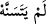
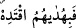
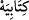
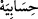
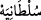
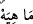
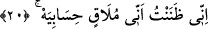

Durma esnâsında ise kural gereği bunları tekrar ortaya çıkarmıştır. “Kitâbiyeh ve
hisâbiyeh” kelimelerinde ise temel kurala göre amel etmemiş, hem dururken hem de
geçerken iki vechi cem’ etmiş olmak için isbât edip göstermiştir. Bu açıklamadan ortaya
çıkan şudur: Vasl hâlindeki genel kuralı bozmamak için vakfı tercih etmek müstehaptır.
Çünkü vasl hâlinde o harfin isbatı, mushaftaki resm-i hattâ itibarla olmaktadır.
Kamus’ta “hau’s-sekt” (sekt ha’sı), harekenin beyân edilmesi ya da harfin açığa
çıkarılması için gelen ha’dır şeklinde târif edilmektedir. Sözgelimi “mâhiyeh” ve “hâ
hunah’ta olduğu gibi. Sekt ha’sında temel kural, onun üzerinde durulmaktır, vakıf
niyetiyle vasledilmiş de olabilir. Bu “ha” ancak sâkin olabilir; onun harekelenmesi
hatadır. Çünkü harekeli bir harfin üzerinde durmak câiz değildir. Sekt ha’sı Kur’an’da
yedi yerde geçer. Bunlar; “
/henüz bozulmamış” (el-Bakara, 2/259),
“
/onların yoluna uy” (el-En’am, 6/90), “
/kitabımı” (el-Hâkka, 69/19),
“
/hesabım”, (el-Hâkka, 69/26), “
/malım” (el-Hâkka, 69/28), “
/gücüm
(saltanatım)” (el-Hâkka, 69/29), “
/mahiyeh” (el-Karia, 101/10)’dir.
“el-Kadiyeh”, “haviyeh”, “semâniyeh”, “aliyeh”, “daniyeh” kelimeleri ve
benzerlerindeki tâ harfi müenneslik içindir. Bunlar üzerinde durulduğunda hâ sesi
çıkarılarak durulurken, geçildiğinde hâ şeklinde okunarak geçilir.
20. Doğrusu ben, hesabımla karşılaşacağımı zâten biliyordum, der.
Âyette yer alan “hisab” kelimesi “muhâsebe: hesaba çekilme” anlamındadır.
Muhâsebe; kulların -hayır ve şer- amellerinin âhirette karşılıklarının verilmesi için
sayılması demektir. Âyette denmiş oluyor ki; Ben ilâhî hesab divanında hesabımla
karşılaşacağımı, âhirette hesaba çekileceğimi kesin olarak biliyordum ve bundan
kesinlikle emindim. Beni hesaba çekeceklerini bildim ve buna îmân ettim, bu duruma
hazır ve âmâde oldum.
Râğıb İsfahânî, asıl anlamı zannetmek/sanmak olan “zann” kelimesinin nasıl olup da
kesin bilgi anlamına geldiğini şöyle açıklamaktadır: “Zan” Arapçada herhangi bir emâre
yardımıyla elde edilen bilgi demektir. Bu bilgi güçlendiği zaman insanda bilgiye yol
açar, çok zayıf olduğunda ise “tevehhüm” sınırını aşamaz. Böylece, “yakîn; yâni kesin
bilgiye de zan denilir. Çünkü zan, yakînî doğurur” diyen kişinin ne demek istediği daha
açık ortaya çıkmaktadır.
“Zann” kelimesinin “ilim” kelimesi ile tefsir edilmesi, öldükten sonra dirilme (ba’s)
ve hesaba çekilmenin îmân edilmesi gereken hususlardan olması ve “yakîn” olmadıkça
îmânın da gerçekleşmemesinden dolayıdır.
Sa’dî Müftî der ki: Yukarıda yapılan açıklamalar bence tartışmalıdır. Çünkü